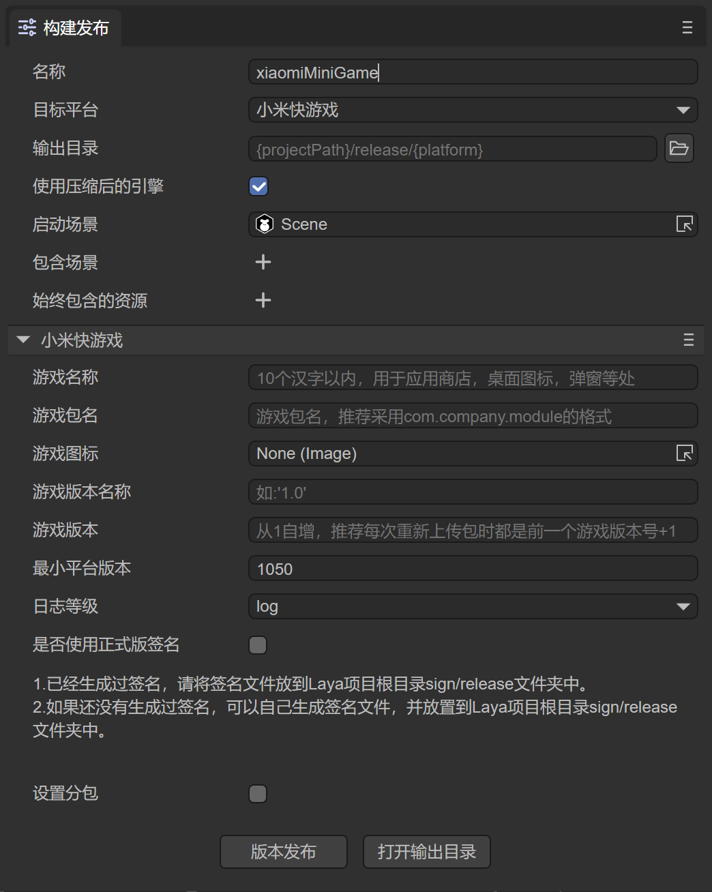
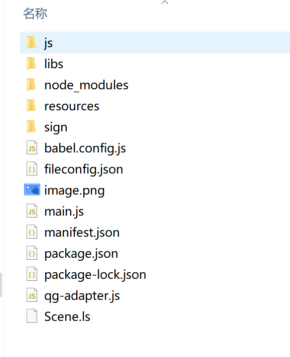
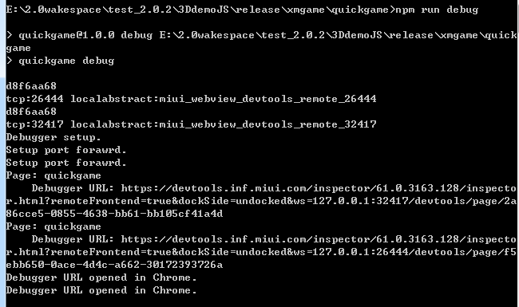
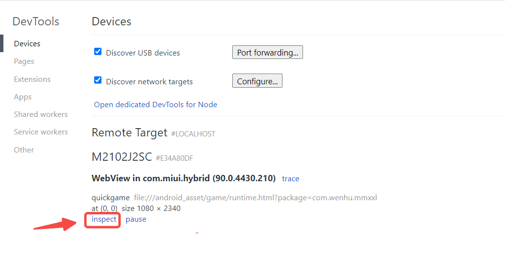
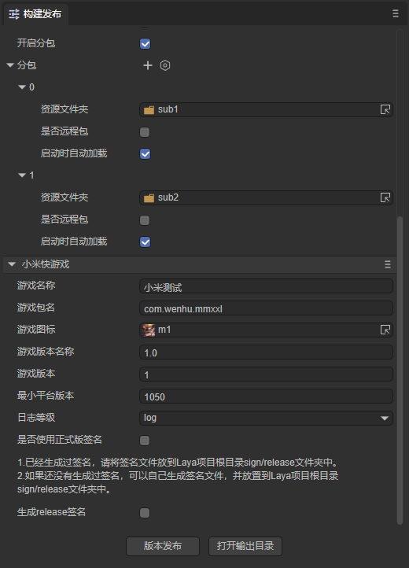

小米快游戏
一、概述
推荐要看一看小米快游戏官方的文档，LayaAir引擎的文档更多的是引擎相关的。
小米快游戏中没有可视化开发调试工具，所以只能是LayaAir IDE中配置好相关参数，然后直接在LayaAir IDE内一键发布成功（生成一个rpk的包）。至于调试方式，则是通过小米手机里安装一个apk调试环境，在apk里选择打开rpk的文件，然后通过Chrome浏览器在PC上用数据线连接手机进行调试。
二、发布为小米快游戏
2.1 选择目标平台
点击构建发布，在弹出的构建项目界面里，选择发布平台为小米快游戏。如图2-1所示，

（图2-1）
下面我们来介绍一下这些功能参数的填写：
1、游戏名称
一般都填写中文汉字，英文也可以。用于应用商店、桌面图标、弹窗等游戏入口处。一个好的名字是游戏能不能吸量的重要元素。我们的建议是都不要超过6个汉字，游戏名太长没什么好处。
2、游戏包名
游戏包名的格式是 com.company.module 第一位com不要变，第二位是公司名，第三位是项目名。都要写英文，例如：com.layabox.demoGame。
3、游戏图标
游戏图标也是重要的游戏入口标识，和游戏名称一样，是非常重要的吸量元素，如果游戏图标设计的好，游戏名称起的好。同样的位置会获得比其它游戏更多的点击率。游戏图标需要提供 192*192 的正方形尺寸。
4、游戏版本名称
游戏版本名称是真实的版本，一般是用于功能性版本的区别。比如我有个大版本改动。原来是1.0，可以变成2.0，如果只是改改Bug，那1.0完全可以改成1.1。以此类推，我们建议采用浮点数命名。比如“0.1”、“1.3”、“5.0”……
5、游戏版本
游戏版本与版本名称用处不同，这里是渠道平台用于区别版本更新。每次提审都要至少递归+1，自己测试无所谓。但是提审这里的值必须要比上次提审的值至少要+1，+N也是可以的，绝对不能等于或者小于上个版本值，建议是提审版本号递归+1。这里需要注意的是，游戏版本必须为正整数。
6、最小平台号
最小平台号，按调试器上显示的平台版本号，进行填写即可。
7、日志等级
七种日志等级，先级从高到底依次为OFF、ERROR、WARN、INFO、DEBUG、TRACE、ALL，可以方便地知道当前程序的运行状态。
8、是否使用正式版签名
如果只是测试版本调试，这里可以不用勾选。正式上线发布前（提版本到平台）必须勾选。
如果勾选了，就会启用正式版签名。关于release签名:
①对于公司,一般一个公司只用一个签名，如果公司已经有签名了，推荐使用公司的签名。如果没有的话，IDE中的发布集成了这个功能，方便开发者生成签名。
②对于个人开发者，可以多个项目使用一个正式签名。只需要生成一次即可。
如果已经release签名了，将签名文件放到Laya项目 sign/release 文件夹下。
2.2 发布后的小游戏目录介绍
点击版本发布，由于在发布前会检查rpk发布环境（用于生成rpk包），如果没有发布环境的，则会开始下载。
发布后的目录结构如图2-2所示：

（图2-2）
js 项目文件 与 libs 引擎库目录
项目代码和类库
resources资源目录 与 Scene.js
resources资源目录和资源文件Scene.js，小游戏由于初始包的限制，建议将初始包的内容在规划好，最好能放到统一的目录下，便于初始包的剥离。
main.js小米快游戏的入口文件
游戏项目入口JS文件与适配库JS等都是在这里进行引入。IDE创建项目的时候已生成好，一般情况下，这里不需要动。
manifest.json 小游戏的项目配置文件
文件里包括了小游戏项目的一些信息，如果想修改，可以直接在这里面编辑。
三、用小米快游戏调试器
3.1 小米快游戏发布、调试环境准备
1、小米品牌的手机（注意必须是MIUI 8.5或以上版本）。
2、下载安装小米的测试APP，进入下载页面后，找到第三步，直接按提示下载即可。
3、PC电脑的Chrome浏览器与手机数据连接线。
4、安装node.js环境，详细步骤在《搭建基础开发环境》中有介绍。
5、安装ADB。
建议安装ADB，因为有些时候，因为授权或者别的莫名其怪的原因。会导致无法正常启动Chrome联真机调试。所以安装ADB 可以验证手机与PC电脑的连接授权。如果确保无USB调试授权问题的，也可以不装。
简单提示一下，下载 ADB Kits，下载后的压缩包，建议解压放到一个路径简单的目录（如:
D:\adb）。要记得添加环境变量（不知如何添加环境变量的可自行百度）。
3.2 小米快游戏发布与接入完整流程
3.2.1 安装并进入快应用调试器
先在手机上安装好小米快游戏的调试APP（快应用调试器），如图3-1所示。然后点击进入。

（图3-1）
3.2.2 在快应用调试器界面扫码安装小米快游戏的rpk包
进入快应用调试器之后，我们可以看到如图3-2所示的APP操作界面。
(图3-2)
可以扫码安装，或者连接USB数据线把发布目录下/dist目录内的rpk包传到手机里，通过点本地安装按钮来安装。
3.2.3 保持物理线路连接以及授权
对于比较有相关经验的开发者，确保USB手机连接线物理线路是已连接状态，并且USB调试授权也没问题的，可以跳过本步骤。
相关操作如下：
1、先用手机连接线将手机与PC保持物理上的连接。打开手机的开发者模式，且打开USB调试。
此时，我们要关注手机端，是否出现如图3-3所示的提示，如果有，则点 确定 允许调试。

（图3-3）
2、验证授权。
当USB调试模式授权成功之后，我们在PC端打开cmd窗口，输入adb devices，应该如图3-4所示。

（图3-4）
总之，在这个环节里，我们要保障PC是有权限调试这个手机设备的。
4.4 启动chrome调试环境
小米快游戏在PC上没有工具的开发调试环境，是通过USB联接到手机设备，然后在PC命令行模式下，通过 npm run debug 命令调起Chrome调试器（前提要保障PC是已安装了Chrome浏览器的）来联调手机真机环境的rpk包，如图3-5所示。当我们能看到Debugger URL opened in Chrome.这个提示的时候，说明chrome已被成功调起。

(图3-5)
或者在Chrome浏览器中输入chrome://inspect/#devices，进入后找到连接的手机选项，点击inspect，如图3-6所示：

（图3-6）
操作完成后，如图3-7所示，就可以按Chrome的调试方式来调试小米快游戏项目。

(图3-7)
至此，小米快游戏从发布到启动Chrome调试的完整流程已介绍完。
四、小米快游戏分包
开发者在开发完成后，能够将需要分包的文件夹进行分包，项目中分包之外的其他文件打包成主包。
小米快游戏分包加载包大小的限制
- 整个小游戏的所有分包总和不超过 10M；
- 单个分包/基础包大小不能超过 5M；
- 整体压缩包（包含原整包和所有分包；）不超过20M。
如图4-1所示，点击开启分包后，选择要进行分包的文件夹即可。

（图4-1）
分包加载的API等，可参考小米官方文档。